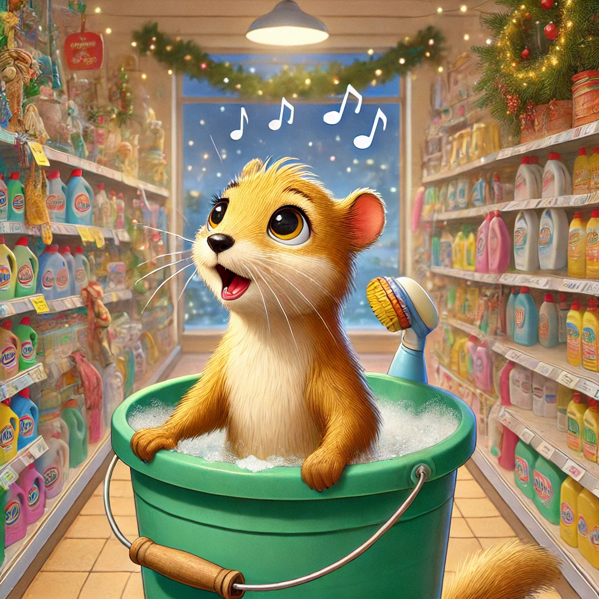
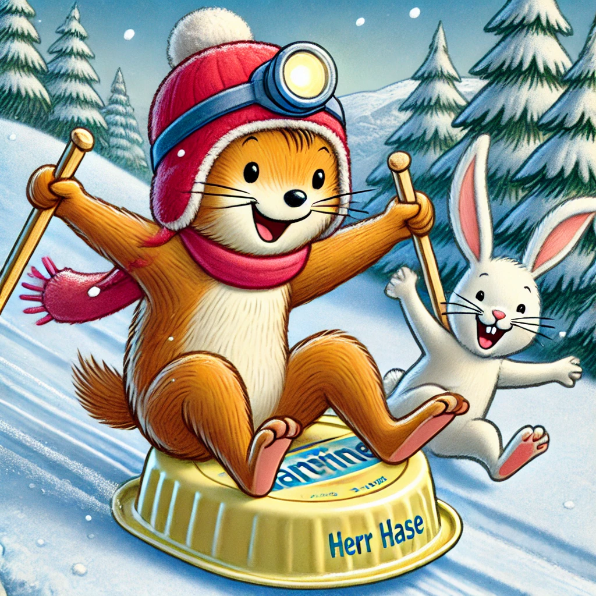

Es war einmal ein Wiesel namens Winnie, das oben auf dem Knabbereienregal eines Supermarkts in Leknes auf den Lofoten wohnte. Eines Tages, Winnie wusch sich gerade in einem Putzeimer die Ohren aus, hörte Winnie die schönste Stimme der Welt. "Fröhöliche Weihnacht überall", schallte es durch die Gänge. Sie hoppelte los, um die Quelle zu finden, konnte aber keine ausmachen. Sie erinnerte sich, dass Herr Hase und Biep diesen Morgen zusammen Kreuzworträtsel lösen wollten und sprintete aufgeregt - nun ja, wie wir ja wissen ist Winnie weder besonders fit noch hat sie es je eilig - stromerte Richtung Herrn Hases Höhle unter den Konserven.
"Hört ihr das? Hört ihr beiden das? Ist das nicht himmlisch?" Schwärmte sie. "Du meinst die Lautsprecher-Musik?" wollte Herr Hase wissen? "Ich meine den Engel, der da singt!"
"Naja, wir wollen mal nicht übertreiben. Als ich damals noch auf großen Konzerten gesungen habe..." Herr Hase sah verträumt in die Luft. "Du hast Konzerte gegeben?" staunte Biep. "Ja. Wir tourten mit den Flauschigen Fünf durch ganz Norwegen. Weihnachten war unsere Spezialität." "Oh bitte bitte sing für uns", flehte Winnie.
Herr Hase wurde ein wenig rot, brachte sich aber in Position. "Es ist ein Ros entspruuungen", schmetterte er in einem klaren Tenor, "aus einer Wurzel zart." Biep und Winnie blieb er Mund offen stehen. Soetwas hatten sie noch nie gehört und sie hatten schon gar nicht erwartet, dass ihr schüchterner Freund so etwas in sich hatte.
Als Herr Hase fertig war, klatschten sie lange und laut. "Es wird wohl Zeit, dass wir einander mehr übereinander erzählen!", rief Biep. "Wer will anfangen?"